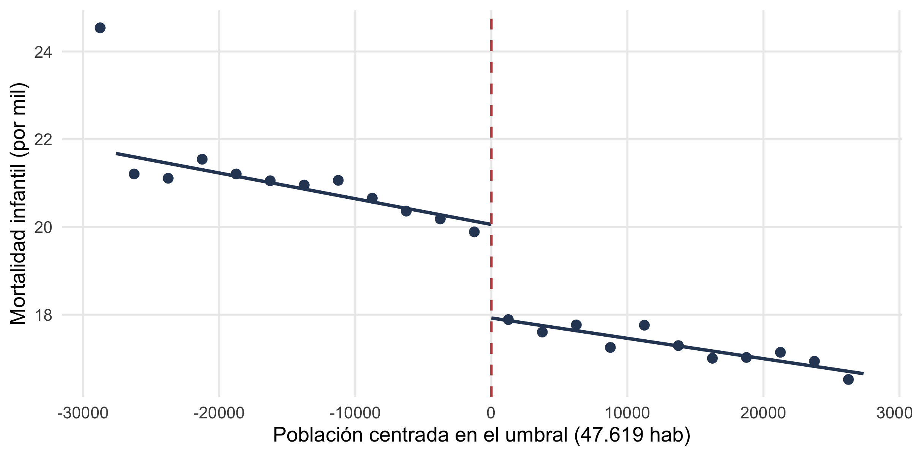
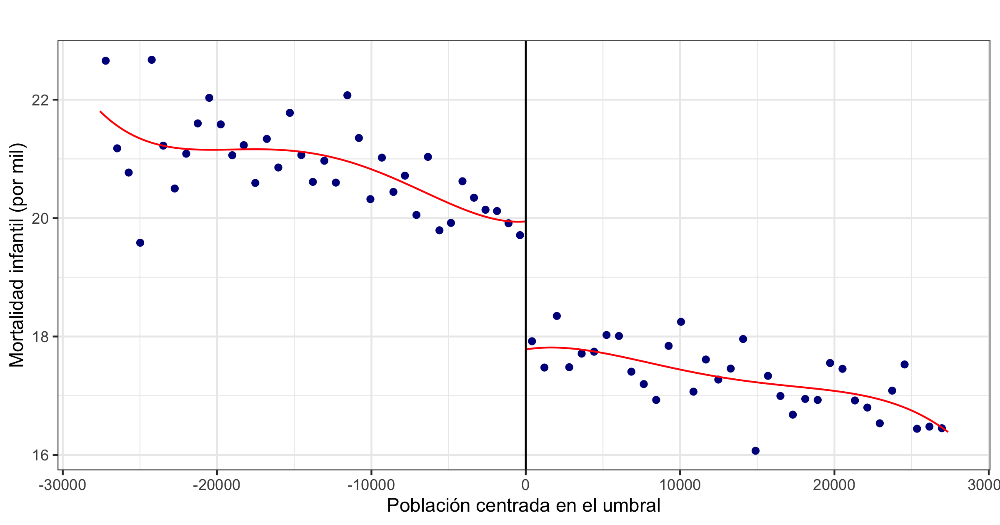
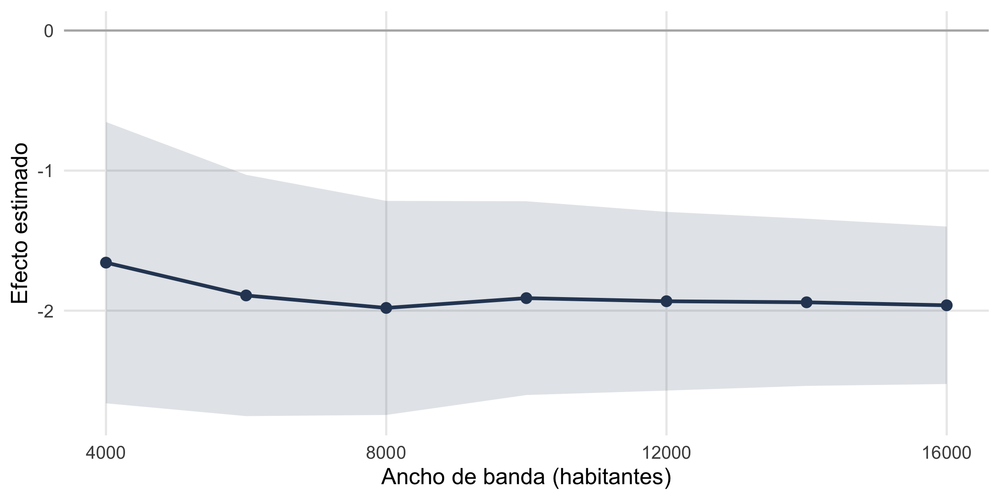

paquetes <- c("tidyverse", "estimatr", "rdrobust",
"rddensity", "fabricatr", "DesignLibrary")
for (pkg in paquetes) {
if (!require(pkg, character.only = TRUE)) {
install.packages(pkg, dependencies = TRUE)
library(pkg, character.only = TRUE)
}
}Referencia R: regresión discontinua
Parte 3 · rdplot, rdrobust, rddensity y los chequeos de validez
Esta página reúne, con código que podés correr y copiar, todas las funciones de R del bloque de regresión discontinua (diapositivas). Cada sección explica en pocas frases qué hace el comando, muestra un bloque ejecutable con su salida real, y cierra con una nota sobre cuándo conviene usarlo y qué mirar.
Los ejemplos trabajan sobre los datos simulados del caso de los concejos municipales en Brasil (Mignozzetti, Cepaluni y Freire, 2025). Como la semilla está fija (set.seed(148)), los números coinciden con los de las diapositivas y con el archivo municipios.csv. El diseño simplifica el paper a un solo umbral (47.619 habitantes, donde el concejo pasa de 9 a 10 bancas), pero con efectos calcados de la investigación real.
1 Paquetes y datos
Cargá los paquetes del bloque. El bucle recorre la lista paquetes e instala cada uno solo si te falta, así el código corre igual en cualquier máquina. rdrobust y rddensity son el estándar para RDD hoy; fabricatr ya lo conocés del bloque de experimentos.
La variable de asignación es poblacion_c: la población de cada municipio centrada en el umbral (población menos 47.619). Cruzar el corte (poblacion_c >= 0) suma una banca; ese salto está escrito en la regla, no lo sortea nadie.
set.seed(148)
datos <- fabricate(
N = 2000,
poblacion = round(runif(N, 20000, 75000)),
poblacion_c = poblacion - 47619,
x = poblacion_c / 10000,
concejo_grande = as.integer(poblacion_c >= 0),
n_concejales = 9 + concejo_grande,
pib_pc = round(12 + 0.8 * x + rnorm(N, 0, 2), 1),
prop_pobres = round(pmin(pmax(0.34 - 0.02 * x + rnorm(N, 0, 0.05), 0.05), 0.75), 3),
bancas_2000 = 9 + rbinom(N, 1, 0.15),
mortalidad_infantil = pmax(2, round(20 - 0.5 * x - 2.01 * concejo_grande + rnorm(N, 0, 2.5), 1)),
mortalidad_postneonatal = pmax(0.5, round(7 - 0.2 * x - 0.9 * concejo_grande + rnorm(N, 0, 1.3), 1)),
matricula_primaria = pmax(0, round(24 + 0.4 * x + 2.58 * concejo_grande + rnorm(N, 0, 3), 1)),
ideb = pmin(10, pmax(0, round(4.5 + 0.1 * x + rnorm(N, 0, 0.5), 1))),
burocratas = pmax(0, round(480 + 12 * x + 104 * concejo_grande + rnorm(N, 0, 45))),
proyectos_servicios = pmax(0, round(40 + 2 * x + 6 * concejo_grande + rnorm(N, 0, 7)))
)
datos |>
select(poblacion_c, concejo_grande, n_concejales, mortalidad_infantil) |>
head() poblacion_c concejo_grande n_concejales mortalidad_infantil
1 -24535 0 9 21.9
2 -12697 0 9 19.9
3 -11158 0 9 20.2
4 -6929 0 9 15.2
5 22805 1 10 10.5
6 19527 1 10 17.4
NotaCuándo usarlo
Un RDD vive donde una regla asigna algo por un umbral en una variable continua (un puntaje, una población, una nota de corte). Lo primero es identificar la variable de asignación y centrarla en el corte, porque todo el análisis se escribe sobre esa distancia al umbral.
2 Comparabilidad cerca del corte
Si la idea del RDD es cierta, arriba y abajo del corte los municipios tienen que parecerse en todo lo que se decidió antes. Mirá los que caen a menos de 4.000 habitantes del umbral y comparalos.
datos |>
filter(abs(poblacion_c) < 4000) |>
group_by(concejo_grande) |>
summarise(across(c(pib_pc, prop_pobres, bancas_2000, n_concejales), mean))# A tibble: 2 × 5
concejo_grande pib_pc prop_pobres bancas_2000 n_concejales
<int> <dbl> <dbl> <dbl> <dbl>
1 0 11.9 0.344 9.11 9
2 1 11.9 0.336 9.10 10El PIB per cápita, la pobreza y las bancas previas casi no se mueven entre los dos grupos. Lo único que cambia de golpe es una banca (n_concejales pasa de 9 a 10): ese es el experimento que escribió la ley.
NotaQué mirar
Es una primera mirada informal al balance, antes de los tests formales. Fijate en que las covariables previas al tratamiento sean parecidas cerca del corte. Si una salta a simple vista, tenés que preocuparte antes de estimar cualquier efecto.
3 Ver el salto a mano
Antes de estimar nada, conviene mirar los datos: promedios del resultado por tramo de población, con una recta suave a cada lado del corte. Este gráfico artesanal deja ver de dónde sale el efecto.
brks <- seq(-30000, 30000, by = 2500)
datos$bin <- cut(datos$poblacion_c, breaks = brks)
centros <- (head(brks, -1) + tail(brks, -1)) / 2
agg <- data.frame(
centro = centros,
y = as.numeric(tapply(datos$mortalidad_infantil, datos$bin, mean))
)
agg <- agg[!is.na(agg$y), ]
ggplot() +
geom_point(data = agg, aes(centro, y), colour = azul, size = 2.4) +
geom_smooth(data = subset(datos, poblacion_c < 0),
aes(poblacion_c, mortalidad_infantil),
method = "lm", se = FALSE, colour = azul, linewidth = 1) +
geom_smooth(data = subset(datos, poblacion_c >= 0),
aes(poblacion_c, mortalidad_infantil),
method = "lm", se = FALSE, colour = azul, linewidth = 1) +
geom_vline(xintercept = 0, linetype = "dashed", colour = rojo, linewidth = 0.8) +
labs(x = "Población centrada en el umbral (47.619 hab)",
y = "Mortalidad infantil (por mil)") +
tema_taller
El salto hacia abajo justo en el corte es el efecto; la pendiente a cada lado es la tendencia que hay que descontar (los municipios más grandes tienen algo menos de mortalidad por otras razones).
NotaCuándo usarlo
Hacé siempre el gráfico antes de estimar. Si no ves un salto claro a ojo, ningún estimador te lo va a inventar de forma creíble. Mirá también la forma de la curva a cada lado: si es muy no lineal, vas a necesitar un polinomio o una ventana más angosta.
4 El mismo salto con rdplot
Lo que armamos a mano lo hace rdplot en una línea: elige los bins de forma óptima y ajusta un polinomio a cada lado del corte. Es el gráfico estándar de los papers de RDD.
rdplot(datos$mortalidad_infantil, datos$poblacion_c,
x.label = "Población centrada en el umbral",
y.label = "Mortalidad infantil (por mil)", title = "")
NotaCuándo usarlo
Es la forma rápida y estándar de visualizar la discontinuidad. El primer argumento es el resultado, el segundo la variable de asignación. Ajustá p = para el orden del polinomio y nbins = si querés controlar los bins. Ver que coincide con el gráfico a mano es lo que te deja confiar en el atajo.
5 Comparación ingenua vs local
La diferencia entre todos los concejos grandes y todos los chicos exagera el efecto, porque arrastra la tendencia (los municipios grandes son distintos por muchas razones además de la banca).
with(datos, mean(mortalidad_infantil[concejo_grande == 1]) -
mean(mortalidad_infantil[concejo_grande == 0]))[1] -3.571459La regresión local, restringida a una ventana cerca del corte y con una pendiente a cada lado, descuenta esa tendencia. El operador * pide los dos efectos principales más su interacción, así la pendiente puede diferir a cada lado del umbral.
cerca <- filter(datos, abs(poblacion_c) < 8000)
fit <- lm_robust(mortalidad_infantil ~ concejo_grande * poblacion_c, data = cerca)
round(coef(summary(fit))["concejo_grande", 1:4], 3) Estimate Std. Error t value Pr(>|t|)
-1.920 0.379 -5.063 0.000 Pasamos de −3,57 (ingenua) a ≈ −1,9 (local): buena parte de la brecha era sesgo de selección, no efecto de la banca.
NotaQué mirar
La comparación ingenua sirve como contraste, para ver cuánto sesgo tenía. Reportá siempre la estimación local. Si la ingenua y la local se parecen, la variable de asignación explicaba poco; si difieren mucho, había una tendencia fuerte que el RDD descuenta.
6 Estimar el efecto con rdrobust
rdrobust es el estimador de referencia: elige el ancho de banda de forma óptima y corrige el sesgo de los bordes (Calonico, Cattaneo y Titiunik, 2014). Con summary() ves el efecto, su error estándar, el valor \(p\) y el ancho de banda elegido.
rd <- rdrobust(datos$mortalidad_infantil, datos$poblacion_c)
summary(rd)Call: rdrobust
Sharp RD estimates using local polynomial regression.
Number of Obs. 2000
BW type mserd
Kernel Triangular
VCE method NN
Left Right
Number of Obs. 1021 979
Eff. Number of Obs. 402 374
Order est. (p) 1 1
Order bias (q) 2 2
BW est. (h) 10425.086 10425.086
BW bias (b) 16234.585 16234.585
rho (h/b) 0.642 0.642
Unique Obs. 1004 960
=====================================================================
Point Robust Inference
Estimate z P>|z| [ 95% C.I. ]
---------------------------------------------------------------------
RD Effect -1.920 -4.603 0.000 [-2.700 , -1.087]
=====================================================================El efecto local es de ≈ −1,92 muertes por mil. En el paper, con los datos reales y los 12 umbrales agrupados, da −2,01 (Tabla 4): la misma lógica, en su versión simulada. Un coeficiente negativo acá es buena noticia (menos muertes). La fila “Conventional” es el estimado puntual; la fila “Robust” trae el intervalo de confianza con la corrección de sesgo, que es el que se reporta.
NotaCuándo usarlo
Es tu caballo de batalla para estimar el efecto en un RDD. Podés extraer los números con rd$coef, rd$se, rd$pv y rd$bws. Argumentos útiles: c = para mover el corte, p = para el orden del polinomio, h = para fijar el ancho de banda a mano, y covs = para sumar controles.
7 El efecto en varias dimensiones
El mismo salto se puede estimar resultado por resultado. Un sapply sobre la lista de variables corre un rdrobust para cada una y arma una tabla con el efecto y su valor \(p\).
outs <- c(matricula_primaria = "Matrícula primaria (chicos/aula)",
mortalidad_infantil = "Mortalidad infantil (por mil)",
mortalidad_postneonatal = "Mortalidad postneonatal (por mil)",
ideb = "Calidad educativa (IDEB, 0-10)",
burocratas = "Cargos designados",
proyectos_servicios = "Proyectos de servicios")
tabla <- t(sapply(names(outs), function(v) {
m <- rdrobust(datos[[v]], datos$poblacion_c)
c(efecto = round(m$coef[1], 2), p = round(m$pv[1], 3))
}))
rownames(tabla) <- outs
knitr::kable(tabla)| efecto | p | |
|---|---|---|
| Matrícula primaria (chicos/aula) | 2.89 | 0.000 |
| Mortalidad infantil (por mil) | -1.92 | 0.000 |
| Mortalidad postneonatal (por mil) | -0.81 | 0.000 |
| Calidad educativa (IDEB, 0-10) | 0.00 | 0.992 |
| Cargos designados | 112.52 | 0.000 |
| Proyectos de servicios | 7.47 | 0.000 |
Mejor salud, más matrícula, más cargos y proyectos. La calidad educativa (IDEB) no salta: entran más chicos al aula sin que el nivel medido caiga, igual que en el paper (−0,02, no significativo). Un nulo acá es información, no un fracaso.
NotaQué mirar
Correr el mismo diseño sobre varios resultados ayuda a ver el patrón completo. Con muchos resultados a la vez conviene recordar el problema de las comparaciones múltiples (ajustar los valores \(p\), como vimos en el bloque de experimentos). Ojo con leer un solo resultado significativo entre muchos como si fuera la historia entera.
8 Chequeo de manipulación: rddensity
Primer supuesto: nadie manipula el umbral. Si los municipios se acomodaran para cruzar el corte, se amontonarían de un lado. rddensity testea ese amontonamiento comparando la densidad de la variable de asignación a cada lado (Cattaneo, Jansson y Ma, 2020).
dens <- rddensity(datos$poblacion_c)
round(c(T = dens$test$t_jk, p = dens$test$p_jk), 3) T p
-0.373 0.709 \(p = 0{,}71\): no hay salto en la densidad. La población de 2003 no se podía manipular, tal como esperábamos.
NotaQué mirar
Corré este test en todo RDD. Un valor \(p\) alto es lo que querés (no rechaza la hipótesis de que no hubo manipulación). Un \(p\) chico es una señal de alarma: la gente pudo elegir de qué lado caer, y la comparación cerca del corte deja de ser creíble.
9 Chequeo de balance en covariables
Segundo supuesto: las variables medidas antes del tratamiento no deberían saltar en el umbral. Corré el RDD sobre cada covariable como placebo: no debería aparecer ningún efecto.
b_pib <- rdrobust(datos$pib_pc, datos$poblacion_c)
b_pobres <- rdrobust(datos$prop_pobres, datos$poblacion_c)
balance <- data.frame(
variable = c("pib_pc", "prop_pobres"),
salto = round(c(b_pib$coef[1], b_pobres$coef[1]), 3),
p_valor = round(c(b_pib$pv[1], b_pobres$pv[1]), 3)
)
balance variable salto p_valor
1 pib_pc -0.138 0.645
2 prop_pobres 0.001 0.930Los dos valores \(p\) son altos: ningún salto donde no debería haberlo. Los grupos son comparables de entrada.
NotaQué mirar
Es el mismo rdrobust, pero aplicado a covariables previas en vez de al resultado. Querés valores \(p\) altos y saltos cercanos a cero. Si una covariable previa salta en el corte, algo más está cambiando en el umbral y el diseño pierde credibilidad.
10 Chequeo con un corte placebo
Tercer chequeo: si inventás un umbral falso donde la ley no cambia nada, no debería aparecer ningún efecto. Se lo pedís a rdrobust con el argumento c =.
rdrobust(datos$mortalidad_infantil, datos$poblacion_c, c = -15000)$pv[1][1] 0.8849919\(p \approx 0{,}89\): nada en el corte inventado. El salto aparece sólo en el umbral verdadero.
NotaQué mirar
Un efecto que aparece en umbrales placebo es una señal de alarma: probablemente estás capturando la tendencia, no un salto real. Un placebo aislado que da significativo no voltea el diseño (con muchos cortes falsos, alguno cae por azar); lo que preocupa es un patrón de placebos significativos.
11 Sensibilidad al ancho de banda
Un resultado creíble no cambia de signo ni de tamaño según cuán ancha sea la ventana. Estimá el efecto con varios anchos de banda fijos (h =) y graficá cómo se mueve.
hs <- seq(4000, 16000, by = 2000)
est <- sapply(hs, function(h) {
m <- rdrobust(datos$mortalidad_infantil, datos$poblacion_c, h = h)
c(m$coef[1], m$se[1])
})
bw <- data.frame(h = hs, tau = est[1, ], se = est[2, ])
ggplot(bw, aes(h, tau)) +
geom_hline(yintercept = 0, colour = "grey70") +
geom_ribbon(aes(ymin = tau - 1.96 * se, ymax = tau + 1.96 * se),
fill = azul, alpha = 0.15) +
geom_line(colour = azul, linewidth = 1) +
geom_point(colour = azul, size = 2.4) +
labs(x = "Ancho de banda (habitantes)", y = "Efecto estimado") +
tema_taller
El efecto se queda estable en torno a −1,9, ventana tras ventana. En el paper, el ancho lo elige el método de Calonico, Cattaneo y Titiunik (2014), y los resultados aguantan variarlo.
NotaQué mirar
Buscá estabilidad: la línea no debería cruzar el cero ni cambiar de signo al variar la ventana. Si el efecto sólo aparece con un ancho de banda muy particular, desconfiá. Por defecto dejá que rdrobust elija el ancho óptimo; esta prueba es para mostrar que la elección no fue afortunada.
12 Romper el diseño a propósito
Para creerle a un chequeo, hay que verlo fallar cuando debe. Empujamos a la mayoría de los municipios que estaban justo por debajo del corte a cruzarlo, como si hubieran manipulado su población, y volvemos a correr el test de densidad.
set.seed(1)
malo <- datos
borde <- malo$poblacion_c > -1500 & malo$poblacion_c < 0
mover <- borde & runif(nrow(malo)) < 0.7
malo$poblacion_c[mover] <- abs(malo$poblacion_c[mover]) + 200
# el test de densidad, antes limpio, ahora rechaza
round(rddensity(malo$poblacion_c)$test$p_jk, 4)[1] 0.0018De \(p = 0{,}71\) a \(p \approx 0{,}002\). El test detecta la manipulación que fabricamos: por eso vale la pena correrlo.
NotaCuándo usarlo
Sabotear los datos a propósito es una forma de convencerte de que tus chequeos sirven. Si un test no reacciona ni siquiera a una violación grande e inventada por vos, no te dice nada cuando pasa la prueba con datos reales. Es un ejercicio de diagnóstico, no algo que reportes en el paper.
13 Simular un RDD antes de correrlo
Igual que con los experimentos, podés declarar un RDD y diagnosticarlo antes de recoger datos. regression_discontinuity_designer, de DesignLibrary, arma un diseño completo listo para diagnose_design(), que devuelve sesgo, poder y cobertura.
d_rdd <- regression_discontinuity_designer(
N = 2000, tau = 0.15, cutoff = 0.5, poly_reg_order = 1
)
set.seed(148)
diagnose_design(d_rdd, sims = 300, bootstrap_sims = 0)
Research design diagnosis based on 300 simulations. Diagnosis completed in 1 secs.
Design Inquiry Estimator Outcome Term Mean Estimand Mean Estimate Bias
d_rdd LATE estimator Y Z 0.15 0.13 -0.02
SD Estimate RMSE Power Coverage N Sims
0.03 0.04 1.00 0.40 300El diseñador trabaja en una escala estandarizada (la variable de asignación va de 0 a 1, no en habitantes), así que sirve para razonar sobre poder y sesgo, no para reproducir los números del caso. Para calcular el poder o el tamaño de muestra de un RDD concreto, el paquete rdpower está hecho para eso.
NotaCuándo usarlo
Usalo en la etapa de planificación, para responder “¿con esta cantidad de casos cerca del corte, detecto un salto de este tamaño?”. Mirá el poder (querés ≥ 0,8) y la cobertura (cerca de 0,95). Recordá que un RDD suele necesitar bastantes observaciones alrededor del umbral, porque el estimador usa sólo una ventana.
14 Para seguir
TipEnlaces y lecturas
Los paquetes de RDD (Cattaneo y coautores)
- rdpackages.github.io: el hub con todos los paquetes.
rdrobust: estimación, inferencia yrdplot.rddensity: tests de manipulación.rdmulti: varios cortes a la vez, como los 12 umbrales del paper.rdlocrand: inferencia de aleatorización local en ventanas chicas.rdpower: poder y tamaño de muestra para RDD.
Para leer
- Cattaneo, Idrobo y Titiunik (2020), A Practical Introduction to RD Designs: Foundations, y su segundo volumen, Extensions (2024): la guía moderna, gratis online.
- Lee y Lemieux (2010): el survey clásico en el Journal of Economic Literature.
Nuestro caso del bloque
- Mignozzetti, Cepaluni y Freire (2025): tamaño del concejo y bienestar en Brasil, con la regla del TSE de 2004 como experimento accidental.